<meta charset="utf-8">
<title>CB250B Engine Catalog</title>
<link rel="stylesheet" href="fonts/noto-sans-sc.css">
<style>
@font-face{font-family:Inter;src:url(fonts/Inter-Regular.ttf) format('truetype');font-weight:400}
@font-face{font-family:Inter;src:url(fonts/Inter-Medium.ttf) format('truetype');font-weight:500}
@font-face{font-family:Inter;src:url(fonts/Inter-SemiBold.ttf) format('truetype');font-weight:600}
@font-face{font-family:Inter;src:url(fonts/Inter-Bold.ttf) format('truetype');font-weight:700}

:root{
  --ink:#101215;
  --ink2:#3A4046;
  --gray:#767C83;
  --gray2:#A2A8AE;
  --rule:#D6D9DC;
  --fill:#F1F2F3;
  --dark:#141619;
  --dark2:#1D2024;
  --darkrule:#33383D;
  --darktext:#B9BEC4;
  --accent:#C0461C;
}
*{margin:0;padding:0;box-sizing:border-box}
@page{size:297mm 210mm;margin:0}
html,body{background:#fff}
body{
  font-family:Inter,'Noto Sans SC',sans-serif;
  color:var(--ink);
  -webkit-font-smoothing:antialiased;
  font-variant-numeric:tabular-nums;
}
.zh{font-family:'Noto Sans SC',Inter,sans-serif}

.page{
  position:relative;width:297mm;height:210mm;overflow:hidden;
  page-break-after:always;break-after:page;background:#fff;
}
.page:last-child{page-break-after:auto}
.page.dark{background:var(--dark);color:#EFF1F3}
.page.tint{background:var(--fill)}
.pad{position:absolute;left:16mm;right:16mm;top:14mm;bottom:19mm;
  display:flex;flex-direction:column;justify-content:flex-start}
.pad>*{flex:0 0 auto}
.grow{flex:1 1 auto;min-height:0}
.pin{margin-top:auto}
.col{display:flex;flex-direction:column;min-height:0}
.col .fill{flex:1 1 auto;min-height:0}

/* ---------- running head / foot ---------- */
.phead{display:flex;align-items:flex-start;gap:7mm;padding-bottom:3.4mm;border-bottom:.35pt solid var(--rule)}
.dark .phead{border-bottom-color:var(--darkrule)}
.phead .pnum{
  font-size:9pt;font-weight:600;letter-spacing:.10em;color:var(--accent);
  line-height:1;padding-top:1.6mm;min-width:9mm
}
.phead h2{font-size:15pt;font-weight:600;letter-spacing:.045em;line-height:1.1;text-transform:uppercase}
.phead .zh{font-size:10pt;font-weight:400;color:var(--gray);margin-top:1.1mm;letter-spacing:.14em}
.dark .phead .zh{color:var(--darktext)}
.phead .kicker{margin-left:auto;text-align:right;font-size:6.6pt;letter-spacing:.16em;color:var(--gray2);
  text-transform:uppercase;padding-top:1.8mm;line-height:1.7}

.pfoot{position:absolute;left:16mm;right:16mm;bottom:9mm;display:flex;align-items:center;
  gap:4mm;font-size:6.2pt;letter-spacing:.15em;color:var(--gray2);text-transform:uppercase}
.pfoot .bar{flex:1;height:.35pt;background:var(--rule)}
.dark .pfoot .bar{background:var(--darkrule)}
.pfoot .pno{font-weight:600;color:var(--ink);letter-spacing:.06em;font-size:7.6pt}
.dark .pfoot .pno{color:#EFF1F3}
.pfoot .tick{width:3mm;height:.9mm;background:var(--accent)}

/* ---------- primitives ---------- */
.lbl{font-size:6.4pt;letter-spacing:.19em;text-transform:uppercase;color:var(--accent);font-weight:600}
.lbl-n{font-size:6.4pt;letter-spacing:.19em;text-transform:uppercase;color:var(--gray2);font-weight:600}
.h3{font-size:11pt;font-weight:600;letter-spacing:.01em;line-height:1.25}
.h3 .zh{display:block;font-size:9pt;font-weight:400;color:var(--gray);letter-spacing:.1em;margin-top:.7mm}
.dark .h3 .zh{color:var(--darktext)}
p.body{font-size:8.3pt;line-height:1.75;color:var(--ink2)}
.dark p.body{color:var(--darktext)}
p.body.zh{font-size:8.6pt;line-height:1.95}
.cap{font-size:6.4pt;letter-spacing:.11em;color:var(--gray2);text-transform:uppercase;margin-top:1.8mm;line-height:1.6}
.cap .zh{display:block;text-transform:none;letter-spacing:.06em;margin-top:.9mm}

.imgbox{position:relative;overflow:hidden;background:var(--fill)}
.dark .imgbox{background:#0C0D0F}
.imgbox img{width:100%;height:100%;object-fit:cover;display:block}
.imgbox.contain img{object-fit:contain}

ul.tick{list-style:none}
ul.tick li{font-size:8pt;line-height:1.5;padding-left:5mm;position:relative;margin-bottom:2.1mm;color:var(--ink2)}
.dark ul.tick li{color:var(--darktext)}
ul.tick li:before{content:"";position:absolute;left:0;top:1.6mm;width:2.4mm;height:.35pt;background:var(--accent)}
ul.tick li b{font-weight:500;color:var(--ink)}
.dark ul.tick li b{color:#EFF1F3}

/* ---------- spec tables ---------- */
table.spec{width:100%;border-collapse:collapse}
table.spec th{
  text-align:left;font-size:6.4pt;letter-spacing:.19em;text-transform:uppercase;color:var(--accent);
  font-weight:600;padding:0 0 2.2mm;border-bottom:.7pt solid var(--ink)
}
.dark table.spec th{border-bottom-color:#EFF1F3}
table.spec th:last-child{text-align:right}
table.spec td{
  font-size:8pt;padding:2.05mm 0;border-bottom:.35pt solid var(--rule);vertical-align:baseline;line-height:1.35
}
.dark table.spec td{border-bottom-color:var(--darkrule)}
table.spec td.k{color:var(--gray);width:56%}
.dark table.spec td.k{color:var(--gray2)}
table.spec td.k .zh{color:var(--ink2);display:inline}
.dark table.spec td.k .zh{color:var(--darktext)}
table.spec td.v{text-align:right;font-weight:500;color:var(--ink);white-space:nowrap}
.dark table.spec td.v{color:#fff}
table.spec.tight td{padding:1.55mm 0;font-size:7.6pt}
table.spec.airy td{padding:4.2mm 0}
table.spec.airy.tight td{padding:3.4mm 0;font-size:8pt}

sup.pv{color:var(--accent);font-size:5.6pt;font-weight:700;vertical-align:super;margin-left:.6mm}
.legend{font-size:6.2pt;line-height:1.65;color:var(--gray2);letter-spacing:.02em;margin-top:3mm}
.legend b{color:var(--accent);font-weight:700}

/* ---------- numbered feature blocks ---------- */
.feat{display:grid;gap:5mm}
.feat .it{border-top:.7pt solid var(--ink);padding-top:2.4mm}
.dark .feat .it{border-top-color:#EFF1F3}
.feat .it .n{font-size:6.8pt;font-weight:700;color:var(--accent);letter-spacing:.12em;display:block;margin-bottom:1.6mm}
.feat .it .t{font-size:9pt;font-weight:600;line-height:1.25}
.feat .it .t .zh{display:block;font-size:8pt;font-weight:400;color:var(--gray);margin-top:.6mm;letter-spacing:.08em}
.dark .feat .it .t .zh{color:var(--darktext)}
.feat .it .d{font-size:7.4pt;line-height:1.62;color:var(--gray);margin-top:1.8mm}
.dark .feat .it .d{color:var(--darktext)}

/* ---------- flow diagram ---------- */
.flow{display:flex;flex-direction:column;gap:0}
.flow .node{
  border:.5pt solid var(--rule);padding:2.3mm 3mm;font-size:7.4pt;font-weight:500;letter-spacing:.06em;
  text-transform:uppercase;background:#fff
}
.dark .flow .node{border-color:var(--darkrule);background:transparent;color:#EFF1F3}
.flow .node .zh{float:right;text-transform:none;letter-spacing:.04em;color:var(--gray);font-weight:400}
.dark .flow .node .zh{color:var(--darktext)}
.flow .node.hi{border-color:var(--accent);border-width:.9pt}
.flow .arr{height:4.2mm;position:relative}
.flow .arr:before{content:"";position:absolute;left:5mm;top:0;bottom:0;width:.5pt;background:var(--accent)}
.flow .arr:after{content:"";position:absolute;left:3.6mm;bottom:0;border-left:1.4mm solid transparent;
  border-right:1.4mm solid transparent;border-top:1.6mm solid var(--accent)}

/* ---------- callout overlay ---------- */
.annot{position:absolute;font-size:7pt;font-weight:600;letter-spacing:.13em;text-transform:uppercase;line-height:1.3}
.annot .zh{display:block;font-size:7.4pt;font-weight:400;letter-spacing:.1em;color:var(--gray);
  text-transform:none;margin-top:.5mm}
.dark .annot .zh{color:var(--darktext)}
.annot .k{color:var(--accent);font-size:6.2pt;letter-spacing:.14em;display:block;margin-bottom:.9mm}
svg.leaders{position:absolute;inset:0;width:100%;height:100%;overflow:visible}
svg.leaders line{stroke:var(--accent);stroke-width:.5}
svg.leaders circle{fill:var(--accent)}

/* ---------- schematic ---------- */
.schem{border:.35pt solid var(--rule);padding:4mm;position:relative;background:#fff}
.dark .schem{border-color:var(--darkrule);background:transparent}
.schem .stamp{position:absolute;right:3mm;top:2.6mm;font-size:5.6pt;letter-spacing:.14em;
  color:var(--gray2);text-transform:uppercase}

/* ---------- cover ---------- */
.cover-top{position:absolute;left:16mm;right:16mm;top:14mm;display:flex;justify-content:space-between;
  align-items:flex-start}
.cover-top .mfr{font-size:7pt;letter-spacing:.16em;text-transform:uppercase;line-height:1.9;color:var(--ink2)}
.cover-top .mfr .zh{display:block;text-transform:none;letter-spacing:.22em;color:var(--gray);font-size:7.6pt}
.cover-top .doc{text-align:right;font-size:6.4pt;letter-spacing:.19em;text-transform:uppercase;color:var(--accent);
  font-weight:600;line-height:1.9}
.cover-top .doc .zh{display:block;color:var(--gray2);letter-spacing:.16em;font-weight:400;text-transform:none}
.cover-hero{position:absolute;left:50%;transform:translateX(-50%);top:24mm;width:218mm;height:116mm}
.cover-hero img{width:100%;height:100%;object-fit:contain;display:block}
.cover-id{position:absolute;left:16mm;bottom:16mm}
.cover-id .model{font-size:64pt;font-weight:700;letter-spacing:-.02em;line-height:.86}
.cover-id .en{font-size:11pt;font-weight:500;letter-spacing:.14em;text-transform:uppercase;margin-top:4.4mm;
  color:var(--ink2)}
.cover-id .zh{font-size:11.5pt;letter-spacing:.2em;color:var(--gray);margin-top:1.9mm}
.cover-rule{position:absolute;left:16mm;bottom:54mm;width:26mm;height:1.1mm;background:var(--accent)}
.cover-tags{position:absolute;right:16mm;bottom:16mm;text-align:right;font-size:7.4pt;letter-spacing:.15em;
  color:var(--gray);line-height:2.1;text-transform:uppercase}
.cover-tags .zh{letter-spacing:.2em}

/* ---------- back ---------- */
.back-mark{position:absolute;left:50%;top:47%;transform:translate(-50%,-50%);text-align:center}
.back-mark .model{font-size:40pt;font-weight:700;letter-spacing:-.01em;line-height:1}
.back-mark .en{font-size:9pt;letter-spacing:.2em;text-transform:uppercase;margin-top:4mm;color:var(--darktext)}
.back-mark .zh{font-size:9.6pt;letter-spacing:.24em;color:var(--gray2);margin-top:1.8mm}
.back-mfr{position:absolute;left:16mm;bottom:38mm;font-size:8.4pt;letter-spacing:.13em;text-transform:uppercase;
  line-height:2;color:#EFF1F3}
.back-mfr .zh{display:block;text-transform:none;letter-spacing:.24em;color:var(--gray2);font-size:9pt}
.back-logo{position:absolute;right:16mm;bottom:38mm;text-align:right}
.back-logo img{width:26mm;display:block;margin-left:auto;opacity:.9}
.back-note{position:absolute;left:16mm;right:16mm;bottom:12mm;font-size:5.9pt;line-height:1.75;
  color:#6E747A;letter-spacing:.02em;border-top:.35pt solid var(--darkrule);padding-top:3mm}
.pin{margin-top:auto}
.pad.spread{justify-content:space-between}
</style>

<!-- ============================ 01 COVER ============================ -->
<section class="page">
  <div class="cover-top">
    <div class="mfr">Zhejiang Changling Benjian Motorcycle Co., Ltd.
      <span class="zh">浙江长铃奔健机车有限公司</span></div>
    <div class="doc">Engine Product Presentation
      <span class="zh">发动机产品说明</span></div>
  </div>

  <div class="cover-hero">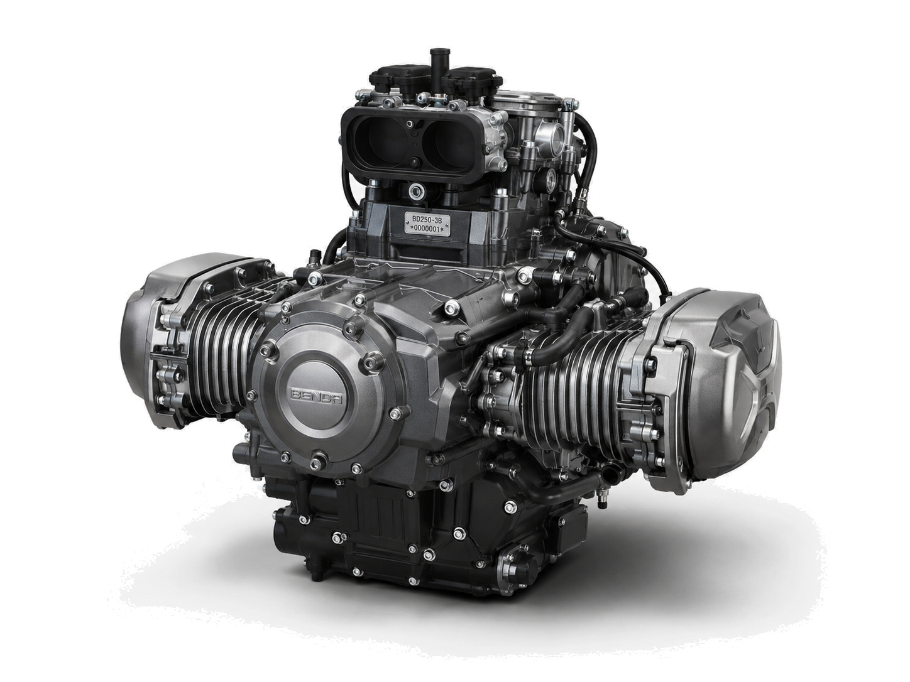</div>

  <div class="cover-rule"></div>
  <div class="cover-id">
    <div class="model">CB250B</div>
    <div class="en">250cc Horizontally Opposed Twin-Cylinder Engine</div>
    <div class="zh">250cc 水平对置双缸发动机</div>
  </div>
  <div class="cover-tags">
    Four-Stroke · Liquid-Cooled<br>
    DOHC · 4 Valves per Cylinder · EFI
    <span class="zh"><br>四冲程 · 液冷 · 双顶置凸轮轴 · 电喷</span>
  </div>
</section>

<!-- ============================ 02 OVERVIEW ============================ -->
<section class="page">
  <div class="pad">
    <div class="phead">
      <div class="pnum">02</div>
      <div class="ptitle"><h2>Engine Overview</h2><div class="zh">产品概述</div></div>
      <div class="kicker">CB250B<br>250cc Boxer Twin</div>
    </div>

    <div class="grow" style="display:grid;grid-template-columns:104mm 1fr;gap:9mm;margin-top:6.5mm">
      <div class="col">
        <div class="imgbox fill">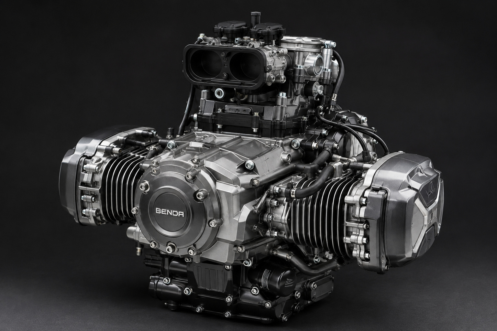</div>
        <div class="cap">250cc horizontally opposed twin-cylinder engine, front three-quarter view
          <span class="zh">250cc 水平对置双缸发动机 · 前三分之四视图</span></div>
      </div>
      <div>
        <div class="h3">A compact 250cc boxer powertrain platform
          <span class="zh">紧凑型 250cc 水平对置动力平台</span></div>
        <p class="body zh" style="margin-top:4mm">CB250B 是一款面向现代摩托车动力系统开发的 250cc 级水平对置双缸发动机。发动机采用 180° 水平对置结构，两侧气缸沿曲轴中心线水平布置，在保持紧凑排量的同时形成低重心、结构对称、辨识性突出的动力平台。</p>
        <p class="body" style="margin-top:3.2mm">The engine combines a four-stroke liquid-cooled boxer layout with DOHC four-valve cylinder heads and electronic fuel injection, and is configured for chain final drive in motorcycle applications.</p>

        <div class="lbl" style="margin-top:9mm">At a Glance 核心参数</div>
        <table class="spec tight" style="margin-top:3mm">
          <tr><td class="k">Engine Model <span class="zh">发动机型号</span></td><td class="v">CB250B</td></tr>
          <tr><td class="k">Configuration <span class="zh">发动机类型</span></td><td class="v">180° opposed twin</td></tr>
          <tr><td class="k">Displacement <span class="zh">实际排量</span></td><td class="v">249cc class<sup class="pv">△</sup></td></tr>
          <tr><td class="k">Valvetrain <span class="zh">配气机构</span></td><td class="v">DOHC, 8 valves</td></tr>
          <tr><td class="k">Cooling <span class="zh">冷却方式</span></td><td class="v">Liquid-cooled</td></tr>
          <tr><td class="k">Fuel System <span class="zh">供油方式</span></td><td class="v">Electronic fuel injection</td></tr>
          <tr><td class="k">Dry Weight <span class="zh">干重</span></td><td class="v">approx. 48 kg<sup class="pv">△</sup></td></tr>
        </table>
        <div class="legend"><b>△</b> Proposed engineering value pending factory confirmation.
          <span class="zh">建议工程值，待工厂确认。</span></div>
      </div>
    </div>

    <div class="feat pin" style="grid-template-columns:repeat(4,1fr);padding-top:8.5mm">
      <div class="it"><span class="n">01</span>
        <div class="t">Horizontally Opposed Twin<span class="zh">水平对置双缸</span></div>
        <div class="d">180° opposed cylinders on the crankshaft centreline.</div></div>
      <div class="it"><span class="n">02</span>
        <div class="t">Liquid Cooling<span class="zh">液冷系统</span></div>
        <div class="d">Active thermal management of barrels and heads.</div></div>
      <div class="it"><span class="n">03</span>
        <div class="t">DOHC Four-Valve<span class="zh">DOHC 四气门</span></div>
        <div class="d">Four camshafts, eight valves, high-rpm breathing.</div></div>
      <div class="it"><span class="n">04</span>
        <div class="t">Compact 250cc Platform<span class="zh">紧凑 250cc 平台</span></div>
        <div class="d">Low build height for lightweight chassis packaging.</div></div>
    </div>
  </div>
  <div class="pfoot"><span>CB250B · Engine Product Presentation</span><span class="bar"></span>
    <span class="tick"></span><span class="pno">02</span></div>
</section>

<!-- ============================ 03 ENGINEERING CONCEPT ============================ -->
<section class="page tint">
  <div class="pad">
    <div class="phead">
      <div class="pnum">03</div>
      <div class="ptitle"><h2>Engineering Concept</h2><div class="zh">结构概念</div></div>
      <div class="kicker">Front View<br>正视图</div>
    </div>

    <div style="position:relative;height:112mm;margin-top:3mm">
      <div class="imgbox" style="position:absolute;left:50%;transform:translateX(-50%);top:15mm;
        width:139mm;height:78mm;background:transparent">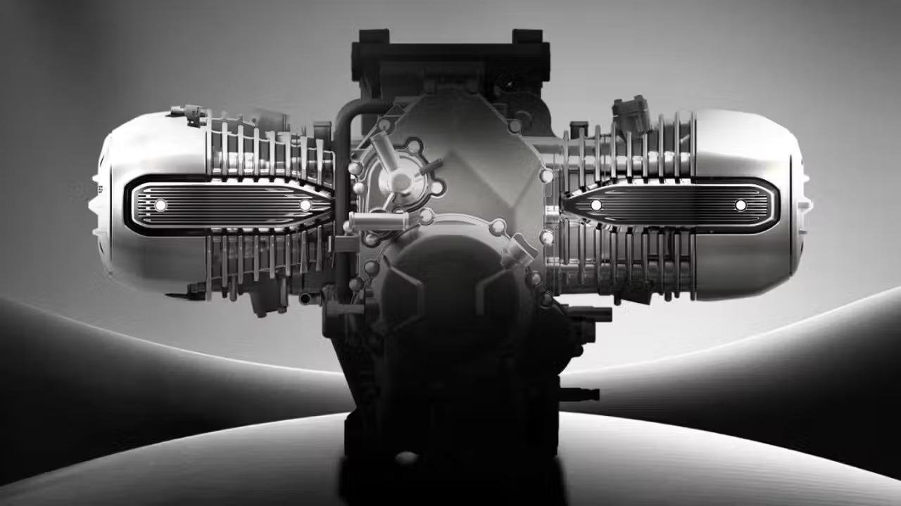</div>

      <svg class="leaders" viewBox="0 0 265 112" preserveAspectRatio="none">
        <line x1="46"  y1="34" x2="85.5"  y2="39"/><circle cx="85.5"  cy="39" r=".9"/>
        <line x1="46"  y1="56" x2="100"   y2="56"/><circle cx="100"   cy="56" r=".9"/>
        <line x1="219" y1="34" x2="178.5" y2="39"/><circle cx="178.5" cy="39" r=".9"/>
        <line x1="219" y1="56" x2="165"   y2="56"/><circle cx="165"   cy="56" r=".9"/>
        <line x1="132" y1="13" x2="132" y2="23.6"/><circle cx="132" cy="23.6" r=".9"/>
        <line x1="132" y1="95" x2="132" y2="70.4"/><circle cx="132" cy="70.4" r=".9"/>
      </svg>

      <div class="annot" style="left:0;top:28mm;width:44mm"><span class="k">A1</span>Cylinder Head
        <span class="zh">气缸盖</span></div>
      <div class="annot" style="left:0;top:50mm;width:44mm"><span class="k">A2</span>Left Cylinder
        <span class="zh">左侧气缸</span></div>
      <div class="annot" style="right:0;top:28mm;width:44mm;text-align:right"><span class="k">A3</span>Cylinder Head
        <span class="zh">气缸盖</span></div>
      <div class="annot" style="right:0;top:50mm;width:44mm;text-align:right"><span class="k">A4</span>Right Cylinder
        <span class="zh">右侧气缸</span></div>
      <div class="annot" style="left:50%;transform:translateX(-50%);top:0;text-align:center"><span class="k">A5</span>Intake
        <span class="zh">进气</span></div>
      <div class="annot" style="left:50%;transform:translateX(-50%);top:97mm;text-align:center"><span class="k">A6</span>Crankcase
        <span class="zh">曲轴箱</span></div>
    </div>

    <div class="pin" style="display:grid;grid-template-columns:1fr 1fr 1fr;gap:9mm;padding-top:1mm">
      <p class="body" style="font-size:7.6pt">Cylinders are arranged horizontally on either side of the crankcase, giving the engine lateral width and low vertical height.</p>
      <p class="body zh" style="font-size:7.8pt">进气位于发动机上部，排气位于下部，两侧气缸沿曲轴中心线对称布置。</p>
      <p class="body" style="font-size:7.6pt">Annotations identify externally visible assemblies only. No internal cross-section is represented.</p>
    </div>
  </div>
  <div class="pfoot"><span>CB250B · Engine Product Presentation</span><span class="bar"></span>
    <span class="tick"></span><span class="pno">03</span></div>
</section>

<!-- ============================ 04 KEY SPECIFICATIONS ============================ -->
<section class="page">
  <div class="pad">
    <div class="phead">
      <div class="pnum">04</div>
      <div class="ptitle"><h2>Key Specifications</h2><div class="zh">主要技术参数</div></div>
      <div class="kicker">Engine Model<br>CB250B</div>
    </div>

    <div style="display:grid;grid-template-columns:1fr 1fr;gap:12mm;margin-top:6.5mm">
      <table class="spec airy">
        <tr><th>Item 项目</th><th>CB250B</th></tr>
        <tr><td class="k">Engine Model <span class="zh">发动机型号</span></td><td class="v">CB250B</td></tr>
        <tr><td class="k">Engine Type <span class="zh">发动机类型</span></td><td class="v">Horizontally opposed twin</td></tr>
        <tr><td class="k">Cylinder Arrangement <span class="zh">气缸排列</span></td><td class="v">180° opposed</td></tr>
        <tr><td class="k">Number of Cylinders <span class="zh">气缸数量</span></td><td class="v">2</td></tr>
        <tr><td class="k">Operating Cycle <span class="zh">工作方式</span></td><td class="v">Four-stroke</td></tr>
        <tr><td class="k">Displacement Class <span class="zh">排量级别</span></td><td class="v">250cc</td></tr>
        <tr><td class="k">Actual Displacement <span class="zh">实际排量</span></td><td class="v">249cc class<sup class="pv">△</sup></td></tr>
        <tr><td class="k">Bore <span class="zh">缸径</span></td><td class="v">53.5 mm<sup class="pv">△</sup></td></tr>
      </table>

      <table class="spec airy">
        <tr><th>Item 项目</th><th>CB250B</th></tr>
        <tr><td class="k">Stroke <span class="zh">行程</span></td><td class="v">55.2 mm<sup class="pv">△</sup></td></tr>
        <tr><td class="k">Compression Ratio <span class="zh">压缩比</span></td><td class="v">11.5 : 1<sup class="pv">▲</sup></td></tr>
        <tr><td class="k">Valvetrain <span class="zh">配气机构</span></td><td class="v">DOHC</td></tr>
        <tr><td class="k">Valves <span class="zh">气门数量</span></td><td class="v">4 per cylinder / 8 total</td></tr>
        <tr><td class="k">Cooling <span class="zh">冷却方式</span></td><td class="v">Liquid-cooled</td></tr>
        <tr><td class="k">Induction <span class="zh">进气方式</span></td><td class="v">Naturally aspirated</td></tr>
        <tr><td class="k">Fuel System <span class="zh">供油方式</span></td><td class="v">Electronic fuel injection</td></tr>
        <tr><td class="k">Starting <span class="zh">启动方式</span></td><td class="v">Electric start</td></tr>
      </table>
    </div>

    <div style="display:grid;grid-template-columns:1fr 1fr;gap:12mm;margin-top:7mm">
      <table class="spec airy tight">
        <tr><td class="k">Ignition <span class="zh">点火方式</span></td><td class="v">ECU-controlled electronic</td></tr>
        <tr><td class="k">Fuel Type <span class="zh">燃料类型</span></td><td class="v">Unleaded gasoline</td></tr>
        <tr><td class="k">Recommended Fuel <span class="zh">推荐燃油</span></td><td class="v">RON 92 and above<sup class="pv">△</sup></td></tr>
      </table>
      <table class="spec airy tight">
        <tr><td class="k">Final Drive Adaptation <span class="zh">最终传动适配</span></td><td class="v">Chain drive</td></tr>
        <tr><td class="k">Transmission Interface <span class="zh">传动适配</span></td><td class="v">Motorcycle gearbox</td></tr>
        <tr><td class="k">Dry Weight <span class="zh">干重</span></td><td class="v">approx. 48 kg<sup class="pv">△</sup></td></tr>
      </table>
    </div>

    <div class="legend pin">
      <b>▲</b> Publicly reported figure — reported by technical media, not a factory-certified specification.
      <span class="zh">公开报道数据，非工厂认证参数。</span><br>
      <b>△</b> Proposed engineering value — supplied for catalog completion pending factory confirmation.
      <span class="zh">建议工程值，最终以生产图纸及工厂确认数据为准。</span>
    </div>
  </div>
  <div class="pfoot"><span>CB250B · Engine Product Presentation</span><span class="bar"></span>
    <span class="tick"></span><span class="pno">04</span></div>
</section>

<!-- ============================ 05 BOXER ARCHITECTURE ============================ -->
<section class="page dark">
  <div class="pad">
    <div class="phead">
      <div class="pnum">05</div>
      <div class="ptitle"><h2>Boxer Architecture</h2><div class="zh">水平对置结构</div></div>
      <div class="kicker">180° Opposed<br>180° 对置</div>
    </div>

    <div class="grow" style="display:grid;grid-template-columns:1fr 88mm;gap:10mm;margin-top:6.5mm">
      <div class="col">
        <div class="imgbox fill" style="max-height:74mm">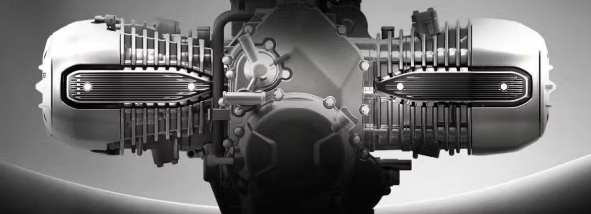</div>
        <div class="cap">Symmetrical opposed cylinder arrangement about the crankshaft centreline
          <span class="zh">以曲轴中心线对称布置的水平对置气缸</span></div>

        <div class="feat" style="grid-template-columns:1fr 1fr;margin-top:6.5mm">
          <div class="it"><span class="n">01</span>
            <div class="t">Low Centre of Gravity<span class="zh">低重心</span></div>
            <div class="d">Principal engine mass sits low in the chassis, lowering powertrain centre of gravity.</div></div>
          <div class="it"><span class="n">02</span>
            <div class="t">Symmetrical Layout<span class="zh">对称布局</span></div>
            <div class="d">Left and right cylinders are mirrored, giving distinctive mechanical balance characteristics.</div></div>
          <div class="it"><span class="n">03</span>
            <div class="t">Compact Platform<span class="zh">紧凑动力平台</span></div>
            <div class="d">250cc displacement in a boxer layout for lightweight motorcycle applications.</div></div>
          <div class="it"><span class="n">04</span>
            <div class="t">Distinctive Character<span class="zh">独特机械特性</span></div>
            <div class="d">Motion and power delivery differ from parallel-twin and V-twin configurations.</div></div>
        </div>
      </div>

      <div>
        <div class="schem" style="height:62mm">
          <div class="stamp">Schematic 示意图</div>
          <svg viewBox="0 0 120 84" style="width:100%;height:100%">
            <line x1="10" y1="42" x2="110" y2="42" stroke="#33383D" stroke-width=".4" stroke-dasharray="3 2"/>
            <circle cx="60" cy="42" r="8.5" fill="none" stroke="#B9BEC4" stroke-width=".7"/>
            <circle cx="60" cy="42" r="1.6" fill="#C0461C"/>
            <rect x="18" y="34" width="26" height="16" fill="none" stroke="#B9BEC4" stroke-width=".7"/>
            <rect x="76" y="34" width="26" height="16" fill="none" stroke="#B9BEC4" stroke-width=".7"/>
            <rect x="38" y="36.5" width="5" height="11" fill="#B9BEC4"/>
            <rect x="77" y="36.5" width="5" height="11" fill="#B9BEC4"/>
            <line x1="44" y1="42" x2="51.5" y2="42" stroke="#B9BEC4" stroke-width=".7"/>
            <line x1="68.5" y1="42" x2="76" y2="42" stroke="#B9BEC4" stroke-width=".7"/>
            <path d="M30 27 L44 27" stroke="#C0461C" stroke-width=".6"/>
            <path d="M44 27 l-3 -1.6 v3.2 z" fill="#C0461C"/>
            <path d="M90 27 L76 27" stroke="#C0461C" stroke-width=".6"/>
            <path d="M76 27 l3 -1.6 v3.2 z" fill="#C0461C"/>
            <text x="60" y="20" fill="#B9BEC4" font-size="4.6" text-anchor="middle"
              font-family="Inter" letter-spacing=".6">OPPOSED PISTON MOTION</text>
            <text x="60" y="66" fill="#767C83" font-size="4.2" text-anchor="middle"
              font-family="Inter" letter-spacing=".5">CRANKSHAFT CENTRELINE</text>
            <text x="60" y="72.5" fill="#767C83" font-size="4.6" text-anchor="middle"
              font-family="Noto Sans SC" letter-spacing=".8">曲轴中心线</text>
          </svg>
        </div>
        <div class="cap">Conceptual representation of the 180° opposed layout. Not an engineering drawing.
          <span class="zh">180° 水平对置布置概念示意，非工程图纸。</span></div>

        <p class="body" style="margin-top:6mm">The two pistons travel in opposite directions along a common horizontal axis. The resulting mechanical character — and the lateral, low-profile package it creates — is the defining attribute of the CB250B platform.</p>
        <p class="body zh" style="margin-top:3mm">水平对置结构使两个活塞呈相反方向运动，形成横向展开、纵向高度较低的动力结构。</p>
      </div>
    </div>
  </div>
  <div class="pfoot"><span>CB250B · Engine Product Presentation</span><span class="bar"></span>
    <span class="tick"></span><span class="pno">05</span></div>
</section>

<!-- ============================ 06 DOHC / FOUR VALVE ============================ -->
<section class="page">
  <div class="pad">
    <div class="phead">
      <div class="pnum">06</div>
      <div class="ptitle"><h2>DOHC Four-Valve System</h2><div class="zh">DOHC 四气门系统</div></div>
      <div class="kicker">8 Valves · 4 Camshafts<br>8 气门 · 4 凸轮轴</div>
    </div>

    <div class="grow" style="display:grid;grid-template-columns:1fr 82mm;gap:10mm;margin-top:6.5mm">
      <div class="col">
        <div class="imgbox fill">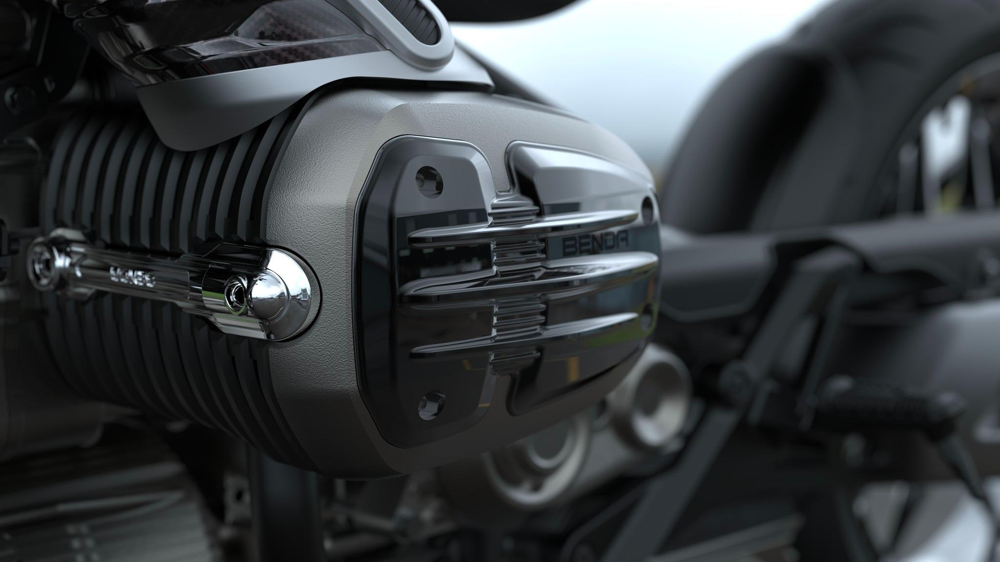</div>
        <div class="cap">Cylinder head and valve cover assembly, left cylinder
          <span class="zh">左侧气缸盖及气门室盖组件</span></div>

        <div style="display:grid;grid-template-columns:1fr 1fr;gap:9mm;margin-top:6mm">
          <p class="body" style="font-size:7.8pt">Double overhead camshafts operate four valves per cylinder. The increased effective port area improves gas exchange in the mid and upper rev range.</p>
          <p class="body zh" style="font-size:8pt">每缸四气门设计通过增加进排气有效面积，提高发动机在中高转速区域的换气效率，并为 250cc 级发动机提供更高的单位排量功率潜力。</p>
        </div>
      </div>

      <div>
        <table class="spec">
          <tr><th>Valvetrain 配气系统</th><th>Value</th></tr>
          <tr><td class="k">Valvetrain Type <span class="zh">配气形式</span></td><td class="v">DOHC</td></tr>
          <tr><td class="k">Valves per Cylinder <span class="zh">每缸气门</span></td><td class="v">4</td></tr>
          <tr><td class="k">Total Valves <span class="zh">总气门数量</span></td><td class="v">8</td></tr>
          <tr><td class="k">Camshafts <span class="zh">凸轮轴数量</span></td><td class="v">4</td></tr>
          <tr><td class="k">Intake Valves <span class="zh">进气门</span></td><td class="v">2 / cylinder</td></tr>
          <tr><td class="k">Exhaust Valves <span class="zh">排气门</span></td><td class="v">2 / cylinder</td></tr>
        </table>

        <div class="schem" style="margin-top:6.5mm;height:52mm">
          <div class="stamp">Schematic 示意图</div>
          <svg viewBox="0 0 100 62" style="width:100%;height:100%">
            <circle cx="50" cy="34" r="23" fill="none" stroke="#D6D9DC" stroke-width=".7"/>
            <circle cx="41" cy="26" r="7.4" fill="none" stroke="#101215" stroke-width=".7"/>
            <circle cx="59" cy="26" r="7.4" fill="none" stroke="#101215" stroke-width=".7"/>
            <circle cx="41" cy="43" r="6.6" fill="none" stroke="#767C83" stroke-width=".7"/>
            <circle cx="59" cy="43" r="6.6" fill="none" stroke="#767C83" stroke-width=".7"/>
            <circle cx="50" cy="34" r="1.5" fill="#C0461C"/>
            <text x="14" y="16" fill="#C0461C" font-size="4" font-family="Inter" letter-spacing=".7">INTAKE ×2</text>
            <text x="14" y="21.5" fill="#767C83" font-size="4.4" font-family="Noto Sans SC" letter-spacing=".6">进气门</text>
            <text x="68" y="56" fill="#C0461C" font-size="4" font-family="Inter" letter-spacing=".7">EXHAUST ×2</text>
            <text x="68" y="61" fill="#767C83" font-size="4.4" font-family="Noto Sans SC" letter-spacing=".6">排气门</text>
            <line x1="31" y1="17.5" x2="36.5" y2="22" stroke="#C0461C" stroke-width=".4"/>
            <line x1="67" y1="52" x2="62.5" y2="47.5" stroke="#C0461C" stroke-width=".4"/>
          </svg>
        </div>
        <div class="cap">Four-valve arrangement, conceptual
          <span class="zh">四气门布置概念示意</span></div>
      </div>
    </div>
  </div>
  <div class="pfoot"><span>CB250B · Engine Product Presentation</span><span class="bar"></span>
    <span class="tick"></span><span class="pno">06</span></div>
</section>

<!-- ============================ 07 LIQUID COOLING ============================ -->
<section class="page">
  <div class="pad">
    <div class="phead">
      <div class="pnum">07</div>
      <div class="ptitle"><h2>Liquid Cooling System</h2><div class="zh">液冷系统</div></div>
      <div class="kicker">Thermal Management<br>热管理</div>
    </div>

    <div class="grow" style="display:grid;grid-template-columns:84mm 1fr 74mm;gap:9mm;margin-top:6.5mm">
      <div class="col">
        <div class="imgbox fill">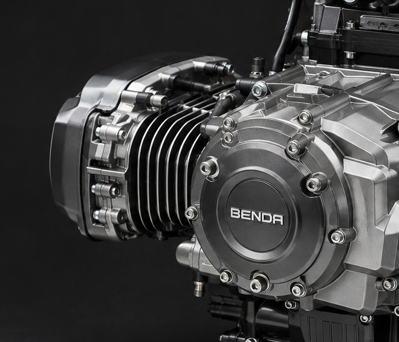</div>
        <div class="cap">Cylinder barrel, head interface and coolant hose routing
          <span class="zh">气缸体、缸盖接口及冷却液管路走向</span></div>
      </div>

      <div>
        <div class="h3">Stable thermal management<span class="zh">稳定热管理</span></div>
        <p class="body" style="margin-top:3.5mm">A liquid cooling circuit provides active thermal management of the cylinder barrels, cylinder heads and high-temperature zones, holding operating temperature within a controlled band across load and ambient conditions.</p>
        <p class="body zh" style="margin-top:3mm">冷却系统对缸体、缸盖和高温区域进行主动热管理，使发动机在不同负荷及环境条件下保持稳定的工作温度。</p>

        <div class="lbl" style="margin-top:6.5mm">System Components 冷却系统组成</div>
        <ul class="tick" style="margin-top:3mm;columns:2;column-gap:8mm">
          <li>Aluminium radiator <b class="zh">铝制散热器</b></li>
          <li>Electric cooling fan <b class="zh">电动冷却风扇</b></li>
          <li>Water pump <b class="zh">水泵</b></li>
          <li>Thermostat <b class="zh">节温器</b></li>
          <li>Coolant circulation passages <b class="zh">冷却液循环通道</b></li>
          <li>Cylinder water jackets <b class="zh">缸体冷却水道</b></li>
          <li>Cylinder head water jackets <b class="zh">缸盖冷却水道</b></li>
        </ul>
      </div>

      <div>
        <table class="spec">
          <tr><th>Proposed 建议参数</th><th>Value</th></tr>
          <tr><td class="k">Coolant Capacity <span class="zh">冷却液容量</span></td><td class="v">approx. 1.6 L<sup class="pv">△</sup></td></tr>
          <tr><td class="k">Thermostat Opening <span class="zh">节温器开启</span></td><td class="v">82 °C<sup class="pv">△</sup></td></tr>
          <tr><td class="k">Fan Activation <span class="zh">风扇启动</span></td><td class="v">100 °C<sup class="pv">△</sup></td></tr>
          <tr><td class="k">Coolant Type <span class="zh">冷却液类型</span></td><td class="v">Long-life ethylene glycol</td></tr>
        </table>
        <div class="legend"><b>△</b> Proposed engineering value pending factory confirmation.
          <span class="zh">建议工程值，待工厂确认。</span> Coolant temperatures are not factory-certified data.
          <span class="zh">冷却温度非工厂认证数据。</span></div>
      </div>
    </div>
  </div>
  <div class="pfoot"><span>CB250B · Engine Product Presentation</span><span class="bar"></span>
    <span class="tick"></span><span class="pno">07</span></div>
</section>

<!-- ============================ 08 FUEL INJECTION & ECU ============================ -->
<section class="page dark">
  <div class="pad">
    <div class="phead">
      <div class="pnum">08</div>
      <div class="ptitle"><h2>Fuel Injection &amp; Engine Management</h2><div class="zh">燃油喷射与发动机管理</div></div>
      <div class="kicker">EFI · ECU<br>电喷 · 电控单元</div>
    </div>

    <div class="grow" style="display:grid;grid-template-columns:100mm 52mm 1fr;gap:9mm;margin-top:6.5mm">
      <div class="col">
        <div class="imgbox fill">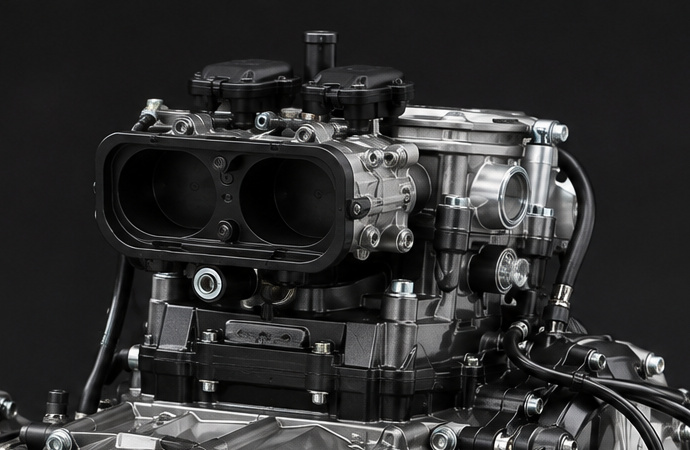</div>
        <div class="cap">Upper intake assembly — airbox interface, throttle bodies and injector mounting
          <span class="zh">上部进气组件 · 进气箱接口、节气门体与喷油器安装位</span></div>

        <div class="lbl" style="margin-top:6mm">ECU Control Functions ECU 控制功能</div>
        <ul class="tick" style="margin-top:3mm;columns:2;column-gap:8mm">
          <li>Fuel metering <b class="zh">燃油喷射量</b></li>
          <li>Ignition timing <b class="zh">点火提前角</b></li>
          <li>Idle control <b class="zh">怠速控制</b></li>
          <li>Temperature compensation <b class="zh">温度补偿</b></li>
          <li>Engine protection <b class="zh">发动机保护</b></li>
          <li>Per-cylinder control <b class="zh">双缸独立控制</b></li>
        </ul>
      </div>

      <div>
        <div class="lbl-n" style="margin-bottom:3mm">Flow 流程</div>
        <div class="flow">
          <div class="node">Air <span class="zh">空气</span></div>
          <div class="arr"></div>
          <div class="node">Air Filter <span class="zh">空气滤清器</span></div>
          <div class="arr"></div>
          <div class="node">Throttle Body <span class="zh">节气门体</span></div>
          <div class="arr"></div>
          <div class="node">Injector <span class="zh">喷油器</span></div>
          <div class="arr"></div>
          <div class="node hi">Combustion <span class="zh">燃烧室</span></div>
        </div>
      </div>

      <div>
        <table class="spec">
          <tr><th>Fuel System 供油系统</th><th>Value</th></tr>
          <tr><td class="k">Fuel System <span class="zh">供油方式</span></td><td class="v">EFI</td></tr>
          <tr><td class="k">Throttle Body <span class="zh">节气门体</span></td><td class="v">34 mm<sup class="pv">△</sup></td></tr>
          <tr><td class="k">Injectors <span class="zh">电子喷油器</span></td><td class="v">2<sup class="pv">△</sup></td></tr>
          <tr><td class="k">Fuel Pressure <span class="zh">燃油压力</span></td><td class="v">3.0 bar<sup class="pv">△</sup></td></tr>
          <tr><td class="k">Oxygen Sensor <span class="zh">氧传感器</span></td><td class="v">Wideband<sup class="pv">△</sup></td></tr>
        </table>

        <table class="spec" style="margin-top:6.5mm">
          <tr><th>Ignition 点火系统</th><th>Value</th></tr>
          <tr><td class="k">Ignition Type <span class="zh">点火方式</span></td><td class="v">ECU electronic</td></tr>
          <tr><td class="k">Ignition Coils <span class="zh">点火线圈</span></td><td class="v">2<sup class="pv">△</sup></td></tr>
          <tr><td class="k">Spark Plugs <span class="zh">火花塞</span></td><td class="v">2<sup class="pv">△</sup></td></tr>
          <tr><td class="k">Plug Gap <span class="zh">火花塞间隙</span></td><td class="v">0.7–0.8 mm<sup class="pv">△</sup></td></tr>
        </table>

        <div class="legend"><b>△</b> Proposed engineering value.
          <span class="zh">建议工程值，待工厂确认。</span></div>
      </div>
    </div>

    <div class="pin" style="border-top:.35pt solid var(--darkrule);padding-top:3.4mm">
      <p class="body" style="font-size:7.4pt">ECU inputs — engine speed · throttle position · intake pressure · intake temperature · coolant temperature · oxygen sensor feedback.
        <span class="zh" style="display:block;margin-top:1.6mm">ECU 输入信号 — 发动机转速 · 节气门开度 · 进气压力 · 进气温度 · 冷却液温度 · 氧传感器反馈。</span></p>
    </div>
  </div>
  <div class="pfoot"><span>CB250B · Engine Product Presentation</span><span class="bar"></span>
    <span class="tick"></span><span class="pno">08</span></div>
</section>

<!-- ============================ 09 CRANKSHAFT ============================ -->
<section class="page">
  <div class="pad">
    <div class="phead">
      <div class="pnum">09</div>
      <div class="ptitle"><h2>Crankshaft &amp; Rotating Assembly</h2><div class="zh">曲轴与旋转组件</div></div>
      <div class="kicker">180° Crank Layout<br>180° 曲轴布局</div>
    </div>

    <div class="grow" style="display:grid;grid-template-columns:98mm 1fr;gap:10mm;margin-top:6.5mm">
      <div class="col">
        <div class="imgbox fill">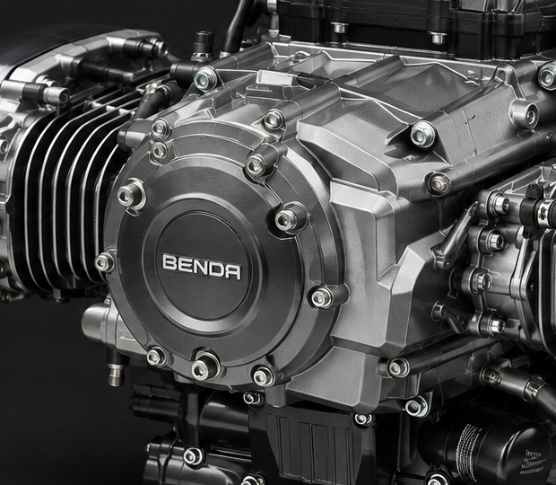</div>
        <div class="cap">Central crankcase and side cover — crankshaft and transmission interface housing
          <span class="zh">中央曲轴箱与侧盖 · 曲轴及传动机构安装壳体</span></div>
      </div>

      <div>
        <div class="h3">180° boxer crankshaft layout<span class="zh">180° 水平对置曲轴结构</span></div>
        <p class="body" style="margin-top:3.5mm">The crankshaft layout is matched to the horizontally opposed cylinder arrangement, with the two pistons moving in opposite directions along a shared horizontal axis.</p>
        <p class="body zh" style="margin-top:3mm">曲轴采用高强度合金钢制造，并经过精密加工、动平衡及热处理，以满足高转速工况下的强度与平衡要求。</p>

        <div class="lbl" style="margin-top:7mm">Assembly Functions 曲轴系统功能</div>
        <ul class="tick" style="margin-top:3mm;columns:2;column-gap:9mm">
          <li>Reciprocating-to-rotary conversion <b class="zh">往复运动转换</b></li>
          <li>Power output <b class="zh">动力输出</b></li>
          <li>Crank phase control <b class="zh">曲柄相位控制</b></li>
          <li>Twin-cylinder motion coordination <b class="zh">双缸运动协调</b></li>
          <li>Vibration management <b class="zh">振动管理</b></li>
          <li>Connecting rod support <b class="zh">连杆支承</b></li>
        </ul>

        <div class="lbl" style="margin-top:7mm">Materials &amp; Process 材料与工艺</div>
        <ul class="tick" style="margin-top:3mm;columns:2;column-gap:9mm">
          <li>High-strength alloy steel <b class="zh">高强度合金钢</b></li>
          <li>Precision machining <b class="zh">精密加工</b></li>
          <li>Dynamic balancing <b class="zh">动平衡</b></li>
          <li>Heat treatment <b class="zh">热处理</b></li>
        </ul>

        <p class="body" style="font-size:7.2pt;color:var(--gray2);margin-top:6mm">Internal components are described functionally. No internal geometry is illustrated in this document.
          <span class="zh">内部构件仅作功能性描述，本文件不表现内部几何结构。</span></p>
      </div>
    </div>
  </div>
  <div class="pfoot"><span>CB250B · Engine Product Presentation</span><span class="bar"></span>
    <span class="tick"></span><span class="pno">09</span></div>
</section>

<!-- ============================ 10 LUBRICATION ============================ -->
<section class="page tint">
  <div class="pad">
    <div class="phead">
      <div class="pnum">10</div>
      <div class="ptitle"><h2>Lubrication System</h2><div class="zh">润滑系统</div></div>
      <div class="kicker">Pressure-Fed<br>压力润滑</div>
    </div>

    <div class="grow" style="display:grid;grid-template-columns:78mm 54mm 1fr;gap:9mm;margin-top:6.5mm">
      <div class="col">
        <div class="imgbox fill">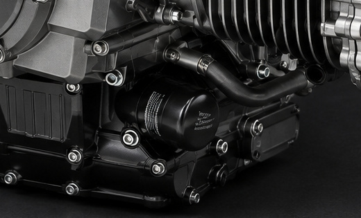</div>
        <div class="cap">Oil filter and lower crankcase / sump area
          <span class="zh">机油滤清器及下曲轴箱、油底壳区域</span></div>

        <div class="lbl" style="margin-top:6mm">Lubricated Assemblies 润滑区域</div>
        <ul class="tick" style="margin-top:3mm">
          <li>Crankshaft &amp; connecting rods <b class="zh">曲轴与连杆</b></li>
          <li>Pistons <b class="zh">活塞</b></li>
          <li>Camshafts &amp; valvetrain <b class="zh">凸轮轴与气门机构</b></li>
          <li>Main bearings <b class="zh">主轴承</b></li>
          <li>Transmission gears <b class="zh">传动机构</b></li>
        </ul>
      </div>

      <div>
        <div class="lbl-n" style="margin-bottom:3mm">Oil Circuit 润滑回路</div>
        <div class="flow">
          <div class="node">Oil Sump <span class="zh">油底壳</span></div>
          <div class="arr"></div>
          <div class="node">Oil Pump <span class="zh">机油泵</span></div>
          <div class="arr"></div>
          <div class="node">Oil Filter <span class="zh">机油滤清器</span></div>
          <div class="arr"></div>
          <div class="node hi">Crankshaft <span class="zh">曲轴</span></div>
          <div class="arr"></div>
          <div class="node hi">Valvetrain <span class="zh">气门机构</span></div>
          <div class="arr"></div>
          <div class="node">Return <span class="zh">回油</span></div>
        </div>
        <div class="cap">Conceptual circuit sequence. Actual oil routing per production drawings.
          <span class="zh">概念性回路顺序，实际油路以生产图纸为准。</span></div>
      </div>

      <div>
        <div class="h3">Full pressure lubrication<span class="zh">全机强制润滑</span></div>
        <p class="body" style="margin-top:3.5mm">A pressure lubrication system supplies continuous oil flow to the principal moving components of the engine, supporting sustained high-rpm operation.</p>
        <p class="body zh" style="margin-top:3mm">压力润滑系统为发动机关键运动部件提供持续润滑，保证高转速工况下的可靠油膜供应。</p>

        <table class="spec" style="margin-top:6.5mm">
          <tr><th>Proposed 建议参数</th><th>Value</th></tr>
          <tr><td class="k">Lubrication Type <span class="zh">润滑方式</span></td><td class="v">Wet sump, pressure-fed</td></tr>
          <tr><td class="k">Oil Capacity <span class="zh">机油容量</span></td><td class="v">1.8 L<sup class="pv">△</sup></td></tr>
          <tr><td class="k">Refill Capacity <span class="zh">换油容量</span></td><td class="v">approx. 1.6 L<sup class="pv">△</sup></td></tr>
          <tr><td class="k">Recommended Oil <span class="zh">推荐机油</span></td><td class="v">10W-40 full synthetic<sup class="pv">△</sup></td></tr>
          <tr><td class="k">Oil Grade <span class="zh">机油等级</span></td><td class="v">API SN / JASO MA2<sup class="pv">△</sup></td></tr>
        </table>
        <div class="legend"><b>△</b> Proposed engineering value pending factory confirmation.
          <span class="zh">建议工程值，待工厂确认。</span></div>
      </div>
    </div>
  </div>
  <div class="pfoot"><span>CB250B · Engine Product Presentation</span><span class="bar"></span>
    <span class="tick"></span><span class="pno">10</span></div>
</section>

<!-- ============================ 11 INTAKE & EXHAUST ============================ -->
<section class="page">
  <div class="pad">
    <div class="phead">
      <div class="pnum">11</div>
      <div class="ptitle"><h2>Intake &amp; Exhaust</h2><div class="zh">进气与排气</div></div>
      <div class="kicker">Upper Intake · Lower Exhaust<br>上进气 · 下排气</div>
    </div>

    <div class="grow" style="display:grid;grid-template-columns:1fr 1fr;gap:11mm;margin-top:6.5mm">
      <div class="col">
        <div style="display:flex;align-items:baseline;gap:3mm;border-bottom:.7pt solid var(--ink);
          padding-bottom:2.2mm">
          <span class="lbl">Intake ↑</span>
          <span style="font-size:10pt;font-weight:600;letter-spacing:.05em">UPPER INTAKE</span>
          <span class="zh" style="font-size:9pt;color:var(--gray);letter-spacing:.12em">上部进气</span>
        </div>
        <div class="imgbox fill" style="margin-top:4mm"></div>
        <p class="body" style="margin-top:4mm;font-size:7.8pt">Fresh air is fed to both cylinders through a short, direct path from the airbox and throttle bodies mounted above the crankcase.</p>
        <p class="body zh" style="margin-top:2.6mm;font-size:8pt">进气系统通过短而直接的进气路径向两个气缸提供新鲜空气。</p>
        <div class="lbl" style="margin-top:5.5mm">Components 主要部件</div>
        <ul class="tick" style="margin-top:3mm;columns:2;column-gap:8mm">
          <li>Air filter <b class="zh">空气滤清器</b></li>
          <li>Airbox <b class="zh">进气箱</b></li>
          <li>Throttle body <b class="zh">节气门体</b></li>
          <li>Intake manifold <b class="zh">进气歧管</b></li>
          <li>Injectors <b class="zh">喷油器</b></li>
          <li>Intake valves <b class="zh">进气门</b></li>
        </ul>
      </div>

      <div class="col">
        <div style="display:flex;align-items:baseline;gap:3mm;border-bottom:.7pt solid var(--ink);
          padding-bottom:2.2mm">
          <span class="lbl">Exhaust ↓</span>
          <span style="font-size:10pt;font-weight:600;letter-spacing:.05em">LOWER EXHAUST</span>
          <span class="zh" style="font-size:9pt;color:var(--gray);letter-spacing:.12em">下部排气</span>
        </div>
        <div class="imgbox fill" style="margin-top:4mm">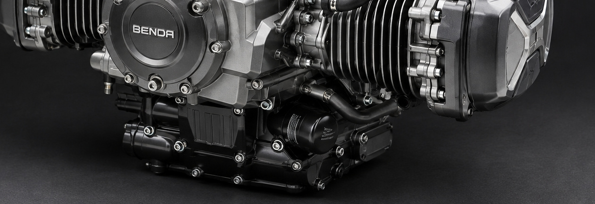</div>
        <p class="body" style="margin-top:4mm;font-size:7.8pt">Exhaust gas is discharged from the lower section of the engine. Final pipe routing and silencer specification are matched to the vehicle platform and applicable emissions regulations.</p>
        <p class="body zh" style="margin-top:2.6mm;font-size:8pt">排气系统应根据最终车型的排放法规及整车空间进行匹配。</p>
        <div class="lbl" style="margin-top:5.5mm">Components 主要组成</div>
        <ul class="tick" style="margin-top:3mm;columns:2;column-gap:8mm">
          <li>Exhaust valves <b class="zh">排气门</b></li>
          <li>Exhaust manifold <b class="zh">排气歧管</b></li>
          <li>Three-way catalyst <b class="zh">三元催化器</b></li>
          <li>Silencer <b class="zh">消声器</b></li>
          <li>Oxygen sensor <b class="zh">氧传感器</b></li>
        </ul>
      </div>
    </div>

    <p class="body pin" style="font-size:7.2pt;color:var(--gray2);border-top:.35pt solid var(--rule);
      padding-top:3mm">Layout direction only. Exact pipe routing is defined by the vehicle installation and production drawings.
      <span class="zh">仅表示布置方向，具体管路走向由整车安装及生产图纸确定。</span></p>
  </div>
  <div class="pfoot"><span>CB250B · Engine Product Presentation</span><span class="bar"></span>
    <span class="tick"></span><span class="pno">11</span></div>
</section>

<!-- ============================ 12 DIMENSIONS ============================ -->
<section class="page">
  <div class="pad">
    <div class="phead">
      <div class="pnum">12</div>
      <div class="ptitle"><h2>Dimensions &amp; Mounting Interface</h2><div class="zh">外形尺寸与安装接口</div></div>
      <div class="kicker">Unit: mm<br>单位：毫米</div>
    </div>

    <div class="grow" style="display:grid;grid-template-columns:1fr 62mm;gap:9mm;margin-top:6mm">
      <div class="col">
        <div class="imgbox contain fill" style="background:#fff">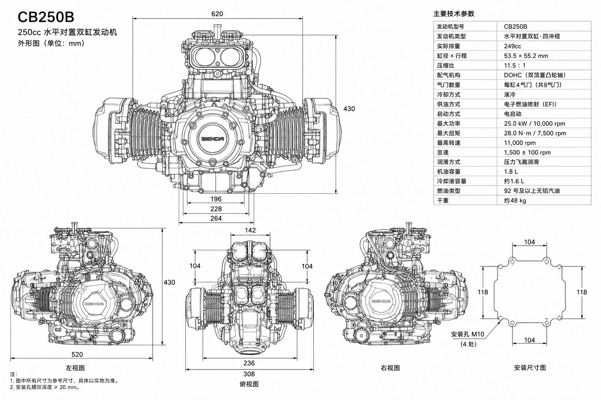</div>
        <div class="cap">General arrangement — front, left, top, right views and mounting hole pattern
          <span class="zh">外形图 · 正视图、左视图、俯视图、右视图及安装孔位</span></div>
      </div>

      <div>
        <table class="spec">
          <tr><th>Overall 外形尺寸</th><th>Value</th></tr>
          <tr><td class="k">Overall Width <span class="zh">总宽</span></td><td class="v">620 mm<sup class="pv">△</sup></td></tr>
          <tr><td class="k">Overall Length <span class="zh">总长</span></td><td class="v">520 mm<sup class="pv">△</sup></td></tr>
          <tr><td class="k">Overall Height <span class="zh">总高</span></td><td class="v">430 mm<sup class="pv">△</sup></td></tr>
          <tr><td class="k">Dry Weight <span class="zh">干重</span></td><td class="v">approx. 48 kg<sup class="pv">△</sup></td></tr>
        </table>

        <table class="spec" style="margin-top:6.5mm">
          <tr><th>Mounting 安装接口</th><th>Value</th></tr>
          <tr><td class="k">Mounting Hole Pitch <span class="zh">安装孔间距</span></td><td class="v">104 × 118 mm<sup class="pv">△</sup></td></tr>
          <tr><td class="k">Mounting Holes <span class="zh">安装孔</span></td><td class="v">M10 × 4<sup class="pv">△</sup></td></tr>
          <tr><td class="k">Thread Depth <span class="zh">螺纹深度</span></td><td class="v">≥ 20 mm<sup class="pv">△</sup></td></tr>
        </table>

        <p class="body" style="font-size:7.4pt;margin-top:6.5mm">The opposed layout keeps overall height low while extending width laterally — the defining packaging characteristic of the platform.</p>
        <p class="body zh" style="font-size:7.6pt;margin-top:2.6mm">水平对置结构使发动机在高度方向保持较低，同时通过横向布局形成明显的 Boxer 结构特征。</p>

        <div class="legend"><b>△</b> Reference dimensions for layout study.
          <span class="zh">图中所有尺寸为参考尺寸，具体以实物及生产图纸为准。</span>
          Mounting point coordinates and interface dimensions must be machined to production engineering drawings.
          <span class="zh">安装点坐标及接口尺寸应按照生产工程图进行加工。</span></div>
      </div>
    </div>
  </div>
  <div class="pfoot"><span>CB250B · Engine Product Presentation</span><span class="bar"></span>
    <span class="tick"></span><span class="pno">12</span></div>
</section>

<!-- ============================ 13 OEM INTEGRATION ============================ -->
<section class="page tint">
  <div class="pad">
    <div class="phead">
      <div class="pnum">13</div>
      <div class="ptitle"><h2>OEM Integration &amp; Packaging</h2><div class="zh">整车集成与动力系统接口</div></div>
      <div class="kicker">Modular Installation<br>模块化安装</div>
    </div>

    <div class="grow" style="display:grid;grid-template-columns:1fr 78mm;gap:9mm;margin-top:6.5mm">
      <div class="col">
        <div class="imgbox fill">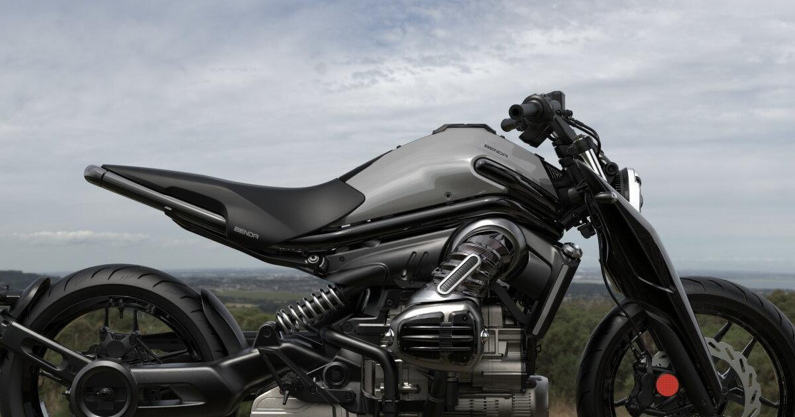</div>
        <div class="cap">Engine installed in a motorcycle platform — application context only
          <span class="zh">发动机装车状态 · 仅作整车集成参考</span></div>
        <p class="body" style="margin-top:4.5mm;font-size:7.8pt">CB250B uses a modular installation structure suited to motorcycle platform development. This page addresses engine integration only; no vehicle specification is presented.</p>
        <p class="body zh" style="margin-top:2.6mm;font-size:8pt">本页仅说明发动机集成接口，不涉及整车技术参数。</p>
      </div>

      <div>
        <div class="lbl">OEM Interfaces 整车匹配接口</div>
        <table class="spec tight" style="margin-top:3mm">
          <tr><td class="k">Front Engine Mount <span class="zh">前安装点</span></td><td class="v">M10<sup class="pv">△</sup></td></tr>
          <tr><td class="k">Rear Engine Mount <span class="zh">后安装点</span></td><td class="v">M10<sup class="pv">△</sup></td></tr>
          <tr><td class="k">Crankshaft Output <span class="zh">曲轴输出接口</span></td><td class="v">Per drawing</td></tr>
          <tr><td class="k">Clutch Interface <span class="zh">离合器接口</span></td><td class="v">Per drawing</td></tr>
          <tr><td class="k">Gearbox Interface <span class="zh">变速箱接口</span></td><td class="v">Per drawing</td></tr>
          <tr><td class="k">Intake Interface <span class="zh">进气接口</span></td><td class="v">Airbox</td></tr>
          <tr><td class="k">Exhaust Interface <span class="zh">排气接口</span></td><td class="v">Manifold flange</td></tr>
          <tr><td class="k">Coolant Interface <span class="zh">冷却液接口</span></td><td class="v">Radiator lines</td></tr>
          <tr><td class="k">ECU Interface <span class="zh">ECU 接口</span></td><td class="v">Connector</td></tr>
          <tr><td class="k">Harness Interface <span class="zh">线束接口</span></td><td class="v">Connector</td></tr>
        </table>
      </div>
    </div>

    <div class="pin" style="border-top:.7pt solid var(--ink);padding-top:3.4mm">
      <div class="lbl" style="margin-bottom:3mm">Applications 应用领域</div>
      <div style="display:flex;flex-wrap:wrap;gap:3mm 0;font-size:7.6pt;letter-spacing:.06em;color:var(--ink2)">
        <span style="padding-right:5mm;border-right:.35pt solid var(--rule);margin-right:5mm">Street <span class="zh" style="color:var(--gray)">街车</span></span>
        <span style="padding-right:5mm;border-right:.35pt solid var(--rule);margin-right:5mm">Retro Street <span class="zh" style="color:var(--gray)">复古街车</span></span>
        <span style="padding-right:5mm;border-right:.35pt solid var(--rule);margin-right:5mm">Cruiser <span class="zh" style="color:var(--gray)">巡航摩托车</span></span>
        <span style="padding-right:5mm;border-right:.35pt solid var(--rule);margin-right:5mm">Lightweight Performance <span class="zh" style="color:var(--gray)">轻量化性能车型</span></span>
        <span style="padding-right:5mm;border-right:.35pt solid var(--rule);margin-right:5mm">Concept <span class="zh" style="color:var(--gray)">概念车型</span></span>
        <span style="padding-right:5mm;border-right:.35pt solid var(--rule);margin-right:5mm">Custom <span class="zh" style="color:var(--gray)">定制车型</span></span>
        <span>Hybrid Platform <span class="zh" style="color:var(--gray)">混合动力平台</span></span>
      </div>
    </div>
  </div>
  <div class="pfoot"><span>CB250B · Engine Product Presentation</span><span class="bar"></span>
    <span class="tick"></span><span class="pno">13</span></div>
</section>

<!-- ============================ 14 PERFORMANCE ============================ -->
<section class="page dark">
  <div class="pad spread">
    <div class="phead">
      <div class="pnum">14</div>
      <div class="ptitle"><h2>Performance &amp; Durability</h2><div class="zh">动力性能与耐久性</div></div>
      <div class="kicker">Proposed Calibration<br>建议标定</div>
    </div>

    <div style="display:grid;grid-template-columns:repeat(4,1fr);gap:7mm;margin-top:8mm">
      <div style="border-top:.9pt solid var(--accent);padding-top:3.2mm">
        <div class="lbl-n">Maximum Power 最大功率</div>
        <div style="font-size:26pt;font-weight:700;letter-spacing:-.015em;margin-top:2.6mm;line-height:1">25.0<span style="font-size:12pt;font-weight:500"> kW</span></div>
        <div style="font-size:8pt;color:var(--darktext);margin-top:2mm;letter-spacing:.06em">@ 10,000 rpm<sup class="pv">△</sup></div>
      </div>
      <div style="border-top:.9pt solid var(--accent);padding-top:3.2mm">
        <div class="lbl-n">Maximum Torque 最大扭矩</div>
        <div style="font-size:26pt;font-weight:700;letter-spacing:-.015em;margin-top:2.6mm;line-height:1">28.0<span style="font-size:12pt;font-weight:500"> N·m</span></div>
        <div style="font-size:8pt;color:var(--darktext);margin-top:2mm;letter-spacing:.06em">@ 7,500 rpm<sup class="pv">△</sup></div>
      </div>
      <div style="border-top:.9pt solid var(--accent);padding-top:3.2mm">
        <div class="lbl-n">Maximum Speed 最高转速</div>
        <div style="font-size:26pt;font-weight:700;letter-spacing:-.015em;margin-top:2.6mm;line-height:1">11,000<span style="font-size:12pt;font-weight:500"> rpm</span></div>
        <div style="font-size:8pt;color:var(--darktext);margin-top:2mm;letter-spacing:.06em">Permissible limit<sup class="pv">△</sup></div>
      </div>
      <div style="border-top:.9pt solid var(--accent);padding-top:3.2mm">
        <div class="lbl-n">Idle Speed 怠速</div>
        <div style="font-size:26pt;font-weight:700;letter-spacing:-.015em;margin-top:2.6mm;line-height:1">1,500<span style="font-size:12pt;font-weight:500"> rpm</span></div>
        <div style="font-size:8pt;color:var(--darktext);margin-top:2mm;letter-spacing:.06em">± 100 rpm<sup class="pv">△</sup></div>
      </div>
    </div>

    <div style="margin-top:8mm;border:.7pt solid var(--accent);padding:4mm 5mm">
      <div class="lbl" style="margin-bottom:2.4mm">Important — Scope of Output Data 重要说明 · 输出数据归属</div>
      <p class="body" style="font-size:7.6pt;color:#E4E7EA">The 62 hp / 100 N·m figure reported publicly for the P51 is the combined output of the complete hybrid system — the 250cc boxer engine together with its electric motor. It is <b style="color:#fff">not</b> the output of the CB250B internal combustion engine alone.</p>
      <p class="body zh" style="font-size:7.8pt;margin-top:2.2mm;color:#E4E7EA">P51 公开资料所称的 62 hp / 100 N·m 为 250cc 水平对置发动机与电机组成的完整混合动力系统综合输出，而非 CB250B 内燃机本体输出。</p>
    </div>

    <div style="display:grid;grid-template-columns:repeat(4,1fr);gap:7mm;margin-top:8mm">
      <div class="it" style="border-top:.7pt solid #EFF1F3;padding-top:2.4mm">
        <div style="font-size:9pt;font-weight:600">Thermal Stability<span class="zh" style="display:block;font-size:8pt;font-weight:400;color:var(--darktext);margin-top:.6mm">热稳定性</span></div>
        <div style="font-size:7.4pt;line-height:1.62;color:var(--darktext);margin-top:1.8mm">Liquid cooling maintains a stable operating temperature band.</div>
      </div>
      <div class="it" style="border-top:.7pt solid #EFF1F3;padding-top:2.4mm">
        <div style="font-size:9pt;font-weight:600">Lubrication Reliability<span class="zh" style="display:block;font-size:8pt;font-weight:400;color:var(--darktext);margin-top:.6mm">润滑可靠性</span></div>
        <div style="font-size:7.4pt;line-height:1.62;color:var(--darktext);margin-top:1.8mm">Pressure feed sustains oil supply to critical moving parts.</div>
      </div>
      <div class="it" style="border-top:.7pt solid #EFF1F3;padding-top:2.4mm">
        <div style="font-size:9pt;font-weight:600">High-RPM Durability<span class="zh" style="display:block;font-size:8pt;font-weight:400;color:var(--darktext);margin-top:.6mm">高转速耐久性</span></div>
        <div style="font-size:7.4pt;line-height:1.62;color:var(--darktext);margin-top:1.8mm">High-strength materials and precision machining in the rotating assembly.</div>
      </div>
      <div class="it" style="border-top:.7pt solid #EFF1F3;padding-top:2.4mm">
        <div style="font-size:9pt;font-weight:600">Structural Rigidity<span class="zh" style="display:block;font-size:8pt;font-weight:400;color:var(--darktext);margin-top:.6mm">结构可靠性</span></div>
        <div style="font-size:7.4pt;line-height:1.62;color:var(--darktext);margin-top:1.8mm">Rigid barrel, head and crankcase structure for long-term operation.</div>
      </div>
    </div>

    <div class="legend" style="padding-top:6.5mm"><b>△</b> Proposed product calibration for catalog completion. No measured power or torque curve is published in this document.
      <span class="zh">建议产品标定值。本文件不提供实测功率／扭矩曲线。</span></div>
  </div>
  <div class="pfoot"><span>CB250B · Engine Product Presentation</span><span class="bar"></span>
    <span class="tick"></span><span class="pno">14</span></div>
</section>

<!-- ============================ 15 TECHNICAL DATA SHEET ============================ -->
<section class="page">
  <div class="pad">
    <div class="phead">
      <div class="pnum">15</div>
      <div class="ptitle"><h2>Technical Data Sheet</h2><div class="zh">技术数据总表</div></div>
      <div class="kicker">CB250B<br>250cc Boxer Twin</div>
    </div>

    <div style="display:grid;grid-template-columns:1fr 1fr;gap:13mm;margin-top:5.5mm">
      <div>
        <table class="spec tight">
          <tr><th>Engine Construction 发动机结构</th><th>CB250B</th></tr>
          <tr><td class="k">Engine Model <span class="zh">发动机型号</span></td><td class="v">CB250B</td></tr>
          <tr><td class="k">Engine Type <span class="zh">发动机类型</span></td><td class="v">Horizontally opposed twin</td></tr>
          <tr><td class="k">Cylinder Angle <span class="zh">结构角度</span></td><td class="v">180°</td></tr>
          <tr><td class="k">Operating Cycle <span class="zh">工作方式</span></td><td class="v">Four-stroke</td></tr>
          <tr><td class="k">Actual Displacement <span class="zh">实际排量</span></td><td class="v">249cc class<sup class="pv">△</sup></td></tr>
          <tr><td class="k">Bore × Stroke <span class="zh">缸径 × 行程</span></td><td class="v">53.5 × 55.2 mm<sup class="pv">△</sup></td></tr>
          <tr><td class="k">Compression Ratio <span class="zh">压缩比</span></td><td class="v">11.5 : 1<sup class="pv">▲</sup></td></tr>
          <tr><td class="k">Valvetrain <span class="zh">配气机构</span></td><td class="v">DOHC</td></tr>
          <tr><td class="k">Number of Valves <span class="zh">气门数量</span></td><td class="v">8</td></tr>
          <tr><td class="k">Cooling <span class="zh">冷却方式</span></td><td class="v">Liquid-cooled</td></tr>
          <tr><td class="k">Induction <span class="zh">进气方式</span></td><td class="v">Naturally aspirated</td></tr>
          <tr><td class="k">Fuel System <span class="zh">供油方式</span></td><td class="v">EFI</td></tr>
          <tr><td class="k">Throttle Body <span class="zh">节气门</span></td><td class="v">34 mm<sup class="pv">△</sup></td></tr>
          <tr><td class="k">Fuel Pressure <span class="zh">燃油压力</span></td><td class="v">3.0 bar<sup class="pv">△</sup></td></tr>
          <tr><td class="k">Starting <span class="zh">启动方式</span></td><td class="v">Electric start</td></tr>
          <tr><td class="k">Final Drive Adaptation <span class="zh">最终传动适配</span></td><td class="v">Chain drive</td></tr>
          <tr><td class="k">Overall L × W × H <span class="zh">外形尺寸</span></td><td class="v">520 × 620 × 430 mm<sup class="pv">△</sup></td></tr>
          <tr><td class="k">Dry Weight <span class="zh">干重</span></td><td class="v">approx. 48 kg<sup class="pv">△</sup></td></tr>
        </table>
      </div>

      <div>
        <table class="spec tight">
          <tr><th>Performance &amp; Service 性能与维护</th><th>CB250B</th></tr>
          <tr><td class="k">Maximum Power <span class="zh">最大功率</span></td><td class="v">25.0 kW / 10,000 rpm<sup class="pv">△</sup></td></tr>
          <tr><td class="k">Maximum Torque <span class="zh">最大扭矩</span></td><td class="v">28.0 N·m / 7,500 rpm<sup class="pv">△</sup></td></tr>
          <tr><td class="k">Maximum Engine Speed <span class="zh">最高转速</span></td><td class="v">11,000 rpm<sup class="pv">△</sup></td></tr>
          <tr><td class="k">Idle Speed <span class="zh">怠速</span></td><td class="v">1,500 ± 100 rpm<sup class="pv">△</sup></td></tr>
          <tr><td class="k">Fuel Type <span class="zh">燃料类型</span></td><td class="v">Unleaded, RON 92+<sup class="pv">△</sup></td></tr>
          <tr><td class="k">Engine Oil <span class="zh">推荐机油</span></td><td class="v">10W-40<sup class="pv">△</sup></td></tr>
          <tr><td class="k">Oil Grade <span class="zh">机油等级</span></td><td class="v">API SN / JASO MA2<sup class="pv">△</sup></td></tr>
          <tr><td class="k">Oil Capacity <span class="zh">机油容量</span></td><td class="v">1.8 L<sup class="pv">△</sup></td></tr>
          <tr><td class="k">Coolant Capacity <span class="zh">冷却液容量</span></td><td class="v">approx. 1.6 L<sup class="pv">△</sup></td></tr>
          <tr><td class="k">Spark Plug Gap <span class="zh">火花塞间隙</span></td><td class="v">0.7–0.8 mm<sup class="pv">△</sup></td></tr>
        </table>

        <table class="spec tight" style="margin-top:6mm">
          <tr><th>Maintenance Intervals 维护周期</th><th>Recommended<sup class="pv">△</sup></th></tr>
          <tr><td class="k">First Oil Change <span class="zh">首次换油</span></td><td class="v">1,000 km</td></tr>
          <tr><td class="k">Oil Change Interval <span class="zh">常规换油周期</span></td><td class="v">5,000 km</td></tr>
          <tr><td class="k">Air Filter Inspection <span class="zh">空气滤芯检查</span></td><td class="v">5,000 km</td></tr>
          <tr><td class="k">Spark Plug Inspection <span class="zh">火花塞检查</span></td><td class="v">10,000 km</td></tr>
          <tr><td class="k">Cooling System Check <span class="zh">冷却系统检查</span></td><td class="v">10,000 km</td></tr>
          <tr><td class="k">Coolant Replacement <span class="zh">冷却液更换</span></td><td class="v">20,000 km</td></tr>
          <tr><td class="k">Valve Clearance Check <span class="zh">气门间隙检查</span></td><td class="v">20,000 km</td></tr>
        </table>
      </div>
    </div>

    <div class="legend pin" style="border-top:.35pt solid var(--rule);padding-top:3mm">
      <b>▲</b> Publicly reported figure, not factory-certified. <span class="zh">公开报道数据，非工厂认证参数。</span>
      &nbsp;&nbsp;<b>△</b> Proposed engineering value for catalog completion, pending factory confirmation.
      <span class="zh">建议工程值，最终以生产图纸及工厂确认数据为准。</span>
    </div>
  </div>
  <div class="pfoot"><span>CB250B · Engine Product Presentation</span><span class="bar"></span>
    <span class="tick"></span><span class="pno">15</span></div>
</section>

<!-- ============================ 16 BACK COVER ============================ -->
<section class="page dark">
  <div style="position:absolute;left:16mm;top:14mm;width:26mm;height:1.1mm;background:var(--accent)"></div>

  <div class="back-mark">
    <div class="model">CB250B</div>
    <div class="en">250cc Horizontally Opposed Twin-Cylinder Engine</div>
    <div class="zh">250cc 水平对置双缸发动机</div>
  </div>

  <div class="back-mfr">Zhejiang Changling Benjian Motorcycle Co., Ltd.
    <span class="zh">浙江长铃奔健机车有限公司</span></div>

  <div class="back-logo">
    
    <div style="font-size:5.8pt;letter-spacing:.16em;color:#6E747A;text-transform:uppercase;margin-top:2.4mm">
      Brand context <span class="zh" style="letter-spacing:.1em">品牌关联</span></div>
  </div>

  <div class="back-note">
    This document is an engine product presentation. Values marked <b style="color:var(--accent)">▲</b> are publicly reported figures; values marked <b style="color:var(--accent)">△</b> are proposed engineering values supplied for catalog completion and are not factory-certified specifications. Final specifications, dimensions and interface data are governed by production engineering drawings and written factory confirmation.
    <span class="zh" style="display:block;margin-top:1.6mm">本文件为发动机产品说明。标注 ▲ 的为公开报道数据，标注 △ 的为用于目录完整性的建议工程值，均非工厂认证参数。最终技术参数、尺寸及接口数据以生产工程图纸及工厂书面确认为准。技术参数如有变更，恕不另行通知。</span>
  </div>
</section>
